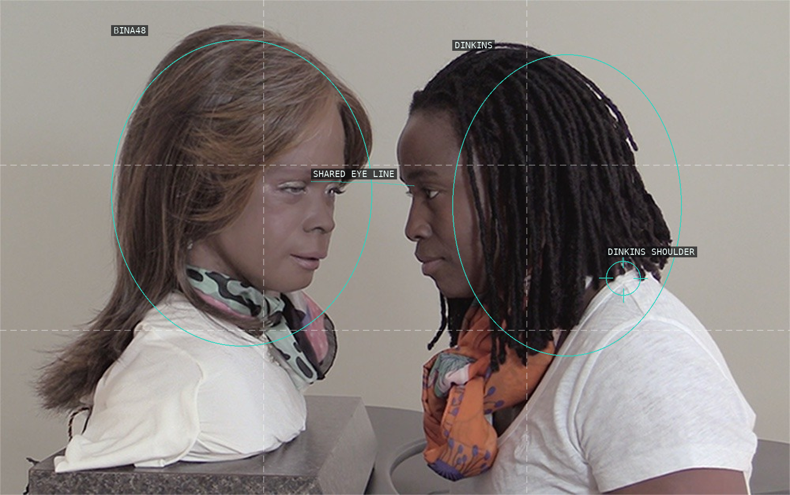
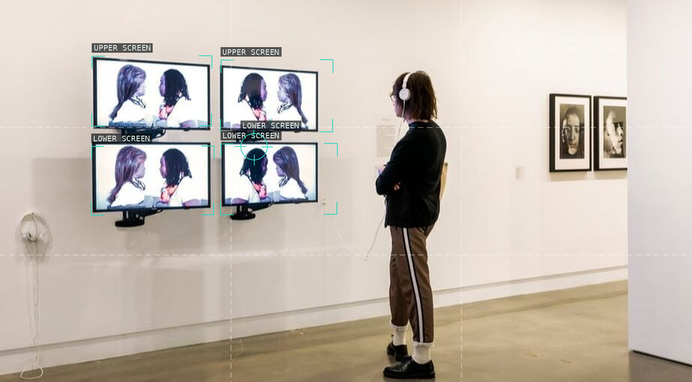
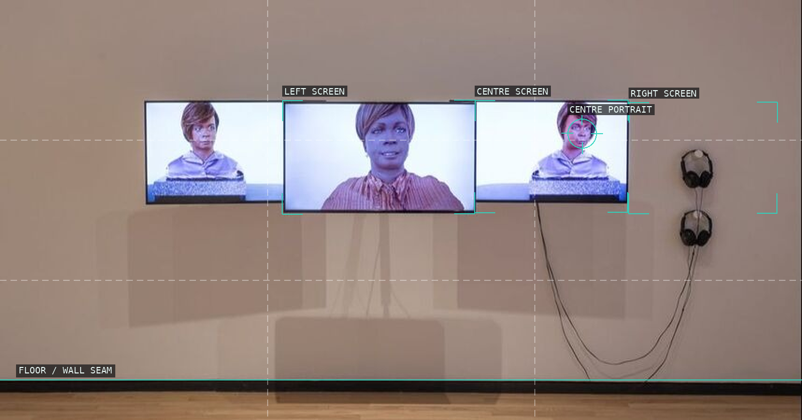
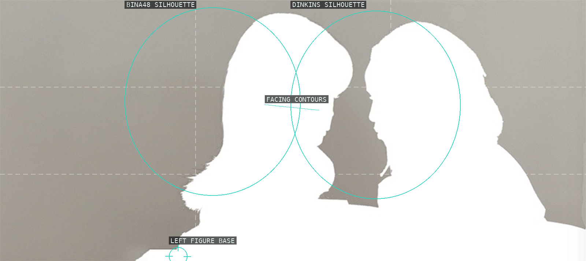
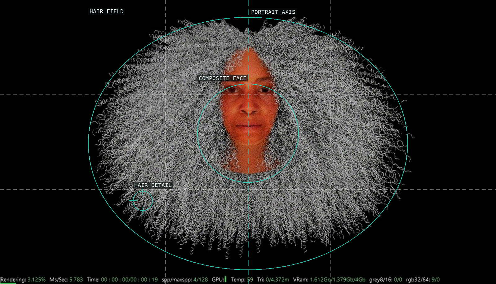
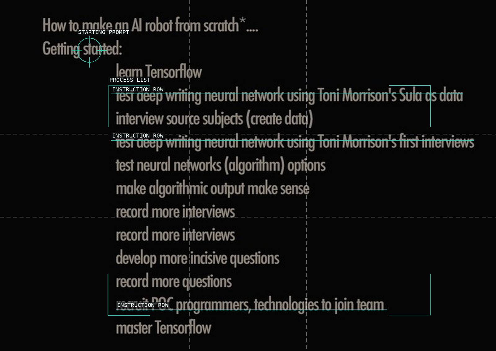

/* stephanie-dinkins - proofs */
6 plates. Deterministic overlays rendered by the composition-analysis skill.

01-conversations-bina48-close-heads
Two facing heads make their short eye-line interval the central event.

02-bina48-fragments-7-6-5-2-icp
Four monitors repeat one encounter across a gallery wall and a listener’s body.

03-bina48-fragments-17-19-20-mocp
A row of screens turns portraiture into an installation-scale field.

04-bina48-close-heads-white
White silhouettes isolate the two facing contours and the interval they create.

05-ntoo-3d-avatar-becoming
A central face remains legible inside a broad, unstable hair field.

06-ntoo-making-process
Repeated text rows make process visible as a vertically ordered sequence.